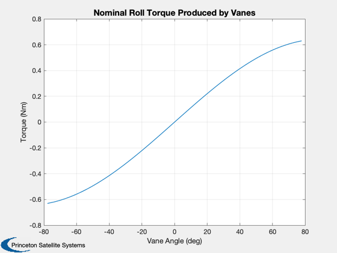

Demonstrate VaneAngles for a CAD model
Since version 9.
------------------------------------------------------------------------
See also Constant, Plot2D, VaneAngles
------------------------------------------------------------------------
Contents
Use a CAD model for vane data
g = load('PlateWithVanes');
Vane properties
areaVane = g.component(3).a;
lSail = max(max(g.component(2).v));
Maximum torque
thetaMax = 80*pi/180;
Ps = Constant('solar pressure mks');
fVane = 2*Ps*areaVane;
Tmax = 2*lSail*fVane*sin(thetaMax);
Command a roll torque
Tcommand = Tmax*linspace(-1,1);
Compute the angles for that torque
for k = 1:length(Tcommand)
angles = VaneAngles( areaVane*[1;1], lSail, Tcommand(k) );
thetaPlot(k) = angles(1);
end
Plot the results
Plot2D(thetaPlot*180/pi,Tcommand,'Vane Angle (deg)','Torque (Nm)','Nominal Roll Torque Produced by Vanes')
